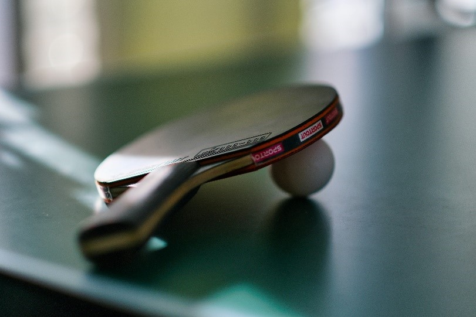

Toen ik uit het middelbaar kwam, stond ik voor een moeilijke keuze die achteraf gezien niet zo moeilijk was. Ik moest een keuze maken wat ik ging studeren. Ik had 2 grote interesses: alles wat met GSM's en computers te maken had en politiek.

Mijn ouders vertelde mij altijd dat ik vroeger al graag op knopjes duwde. Al van jongs af aan werd ik al eens gevraagd door tantes en nonkels om een klein probleempje met de GSM of tablet op te lossen. En zo werd ik stilaan de IT'er van de familie. Omdat in de school waar ik zat in het middelbaar geen IT-richting was, wou ik dit wel koste wat kost gaan studeren in de hoge school. Tijdens de zomer voor ik naar de hogeschool ging, deed ik vrijwilligerswerk als “Digi-assistent” voor twee dienstencentra voor senioren in Pelt: Binnenhof en Pelle Melle. Hier konden senioren die problemen hadden met hun computer, GSM, tablet, … bij mij terecht. Meestal ging het maar om kleine zaken, zoals:
Die senioren waren echt blij dat ik soms met zoiets klein en simpel voor hun een wereld van verschil betekende. Hier heb ik ook echt gemerkt dat ik heel veel voldoening haal uit het helpen van mensen die eendere welk ICT probleem hebben.
Een andere grote interesse van mij is politiek. Iets wat je misschien niet helemaal verwacht van een jongen van 19 jaar. De meeste mensen vinden politiek maar saai en een ver-van-hun-bed-show. Ik kan u volmondig zeggen dat mensen dan fout denken. Want ik heb gezien dat politiek ook plezier is. Na ieder groot congres is er een heus dansfeest waar wordt gedronken. Ook tijdens het jaar na een vergadering wordt er al eens een pintje genuttigd. Maar de meeste mensen zien alleen de harde en zware debatten in de Kamer en in het parlement.
Deze fascinatie begon bij de verkiezingen van 2019. Ik zag rondom mij sommige vrienden die ook politiek gingen en dat heeft zeker ook meegespeeld. Ik voelde op dat moment dat ik iets meer met politiek wilde doen. Mijn studeerskills zijn ook weer niet zo goed dat ik op de unief Politieke Wetenschappen wou gaan studeren. Dus besloot ik eind 2019 om mij aan te sluiten bij een lokale jongeren partij.
Naast computers en politiek heb ik nog een andere hobby: tafeltennis. Dit doe ik bij een lokale tafeltennisvereniging. Tafeltennis doe ik al vanaf 2013 en een jaar later speelde ik al competitie. Ieder jaar in de lagere school gingen we tijdens een woensdagnamiddag naar die tafeltennisvereniging. Daar leerden we kennismaken met tafeltennis d.m.v. kleine spelletjes. In mijn laatste jaar op de basisschool ging ik ook weer naar zo'n initiatienamiddag. Daar vroeg de trainer of ik eens zin had om de volgende dag mee te trainen, daarop zei ik natuurlijk geen nee. Voor mij is tafeltennis niet alleen een hobby maar ook gewoon een plaats waar ik graag kom om na een wedstrijd een pintje te drinken. Door de jaren heen heb ik daar vrienden voor het leven gemaakt. Ik ga niet zeggen dat ik de beste ben. Maar ik doe het na al die jaren nog even graag.
Tom Henderix © 2022